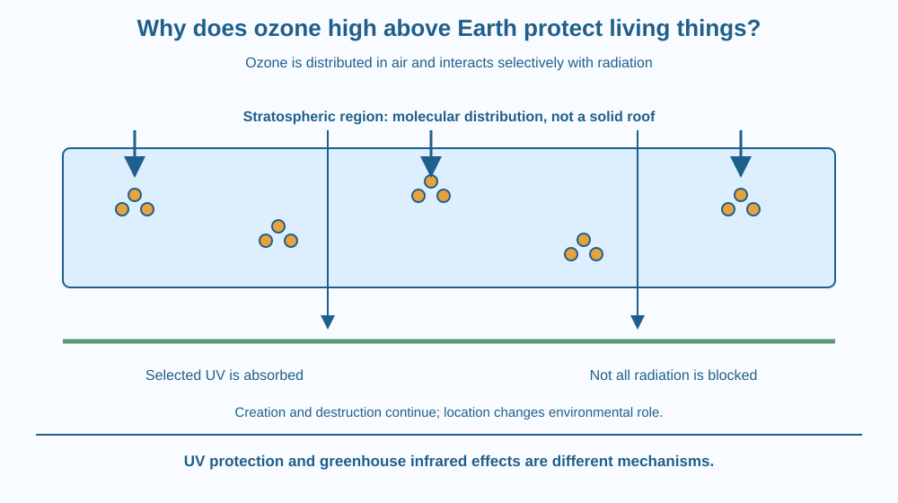

Explain how stratospheric ozone absorbs some incoming ultraviolet radiation. Distinguish a region of ozone-containing air from a solid protective roof. Recognise the difference between ozone high in the atmosphere and unwanted ozone near the ground, without confusing ozone loss with greenhouse warming.
People describe an ozone layer protecting Earth, but an aircraft does not strike a solid sheet around the planet. The layer is a region of air with a greater ozone abundance than surrounding regions.
Its usefulness comes from molecular interactions with radiation. Some ultraviolet energy is absorbed before it reaches lower levels. The mechanism is therefore not simply a physical shade like a tree canopy or a blue-scattering sky.
The key questions are which molecule interacts with which radiation and where that interaction occurs.
Ordinary oxygen gas is mainly O2, while ozone is O3, containing three oxygen atoms per molecule. These are different forms of the same element with different chemical and radiation-interaction properties.
Much atmospheric ozone is found in the stratosphere, above the main region where everyday weather occurs. The term ozone layer refers to this distribution, not a continuous surface made of solid ozone.
Ozone can absorb ultraviolet radiation in important wavelength ranges. Absorption transfers radiation energy into molecular processes, including breaking an ozone molecule into other oxygen forms. Subsequent interactions redistribute that energy rather than simply allowing the same incoming UV to pass unchanged downward.
Oxygen and ozone participate in a continuing creation-and-destruction cycle. Ozone does not need to be one permanent molecule lasting forever to contribute to the protective effect. Its abundance reflects competing processes under atmospheric conditions.
The protection is selective, not total. The atmosphere does not remove every kind of radiation or every ultraviolet wavelength equally. The lesson therefore avoids the false picture of a perfect shield that makes all exposure harmless.
Certain substances can alter the balance of ozone destruction. In familiar depletion chemistry, reactive chlorine-containing species can participate in cycles that destroy ozone while being regenerated. This illustrates why a small participating species can matter through repeated reactions, without treating it as a one-use sponge.
Ground-level ozone has a different role in human environments and can be an unwanted air pollutant. The same chemical formula does not guarantee the same consequence in every location. Where the molecule occurs and what it interacts with are part of its significance.
Ozone depletion and greenhouse warming are different mechanisms. One concerns the amount and distribution of UV-absorbing ozone; the other concerns Earth's energy balance, including infrared interactions. They can interact within the climate system, but they should not be used as interchangeable names.
Draw incoming radiation as several kinds of arrows. Place an air region containing ozone symbols above a ground line. Stop or transform selected ultraviolet arrows at molecular symbols while allowing other radiation paths to continue.
Do not draw a solid slab. The region contains mostly other air components too, and the relevant interactions occur among molecules distributed through space.
Add a pair of creation and destruction arrows around ozone. This shows a dynamic balance rather than a permanent roof. In a second version, increase a destruction pathway and predict a reduced ability to absorb the relevant incoming radiation, while keeping the model qualitative.
The SVG shows a stratospheric region containing scattered O3 symbols and incoming ultraviolet arrows. Some arrows end at interaction symbols; other radiation paths continue downward. A side cycle represents ongoing ozone formation and loss.
A lower label distinguishes ground-level ozone from the high-atmosphere example. The diagram does not use a solid barrier or claim that all UV is removed.
The drawn altitude bands are schematic, not a scale measurement. The illustration also separates UV absorption from a greenhouse infrared diagram, preserving the distinct core mechanisms of the two planned lessons.

Environmental discussions can use the word ozone in apparently opposite ways: protective high above and unwanted near the ground. Location resolves much of the confusion. A chemical's effect depends on its context as well as its formula.
Students in India may encounter UV forecasts or environmental campaigns, but this lesson does not provide personal exposure advice or replace current guidance. The scientific point is selective atmospheric absorption, not a claim that the ozone layer eliminates all risk from sunlight.
No direct solar observation or ozone generation is needed. Ozone is not something to make or inhale for a school activity. Paper symbols provide the required model safely.
Use paper and three colours for radiation and molecules.
Explain which features are simplified. Your symbol count is not a measured atmospheric concentration, and arrow counts do not represent real percentages. Ask a partner to check that the model neither blocks all radiation nor confuses the layer with an opaque roof.
How can a continually changing population of molecules provide a fairly persistent atmospheric function? Use the balance of formation and loss rather than assuming each individual molecule must last indefinitely.
Now place the same formula near the ground. Why does the earlier protective role not automatically make that new location beneficial? Identify the changed surroundings and exposure pathways without making a personal medical recommendation.
What is the formula of ozone?
Answer: B — An ozone molecule contains three oxygen atoms.
Why is stratospheric ozone protective in the mechanism described?
Answer: C — Selective molecular absorption reduces relevant incoming UV at lower levels.
A diagram labels ozone depletion as identical to greenhouse warming. What needs correction?
Answer: A — UV absorption by ozone and infrared energy-balance effects are distinct processes.
Write a correction to three claims: the ozone layer is solid, it stops all radiation, and ozone depletion is simply another name for greenhouse warming.
Use one diagram for selective UV interaction and a separate label reserving infrared energy-balance questions for the greenhouse mechanism. Include a dynamic creation-and-loss cycle so your explanation remains accurate even though individual ozone molecules are continually transformed.
The same molecule can have different environmental significance in different places. High-atmosphere ozone can intercept relevant UV before it reaches lower levels, while ground-level ozone interacts directly with organisms and materials near us. A formula identifies a substance, but location helps explain its role.
Stratospheric ozone selectively absorbs important ultraviolet wavelengths through molecular interactions; it is a dynamic air region, not a solid roof or a complete radiation shield.